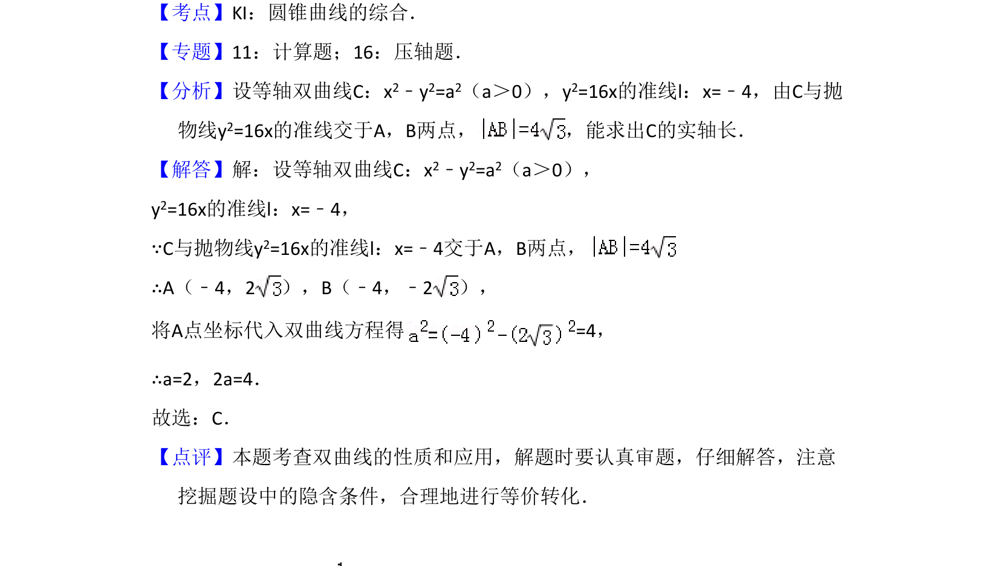

考点：等轴双曲线 抛物线准线 弦长 实轴长
通过等轴双曲线与抛物线准线相交的弦长求双曲线实轴长。

📄 原 PDF 第 8 页：
素材/真题/吉林/2008-2024·（吉林）数学高考真题/2012年高考数学试卷（文）（新课标）（解析卷）.pdf
10．（5分）等轴双曲线C的中心在原点，焦点在x轴上，C与抛物线y2=16x的准 线交于点A和点B，|AB|=4，则C的实轴长为（ ） A．B．C．4 D．8
【考点】KI：圆锥曲线的综合．菁优网版权所有 【专题】11：计算题；16：压轴题． 【分析】设等轴双曲线C：x2﹣y2=a2（a＞0），y2=16x的准线l：x=﹣4，由C与抛 物线y2=16x的准线交于A，B两点， ，能求出C的实轴长． 【解答】解：设等轴双曲线C：x2﹣y2=a2（a＞0）， y2=16x的准线l：x=﹣4， ∵C与抛物线y2=16x的准线l：x=﹣4交于A，B两点， ∴A（﹣4，2），B（﹣4，﹣2）， 将A点坐标代入双曲线方程得=4， ∴a=2，2a=4． 故选：C． 【点评】本题考查双曲线的性质和应用，解题时要认真审题，仔细解答，注意 挖掘题设中的隐含条件，合理地进行等价转化．